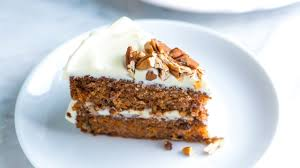

8 ounces (227 grams) cream cheese, at room temperature
1 teaspoon (4 grams) pure vanilla extract
1/2 cup (115 grams) confectioners' (icing or powdered) sugar, sifted

Directions
Line 3 (9-inch) round cakepans with wax paper; lightly grease and flour wax paper. Set pans aside.
Stir together first 4 dry ingredients.
Separate egg whites from yolks in a bowl.
Beat egg yolks with mixer then gradually add 2 cups of sugar .
Next, add flour mixture, beating at low speed until blended.
Beat egg whites till light and fluffy
Add carrot in egg yolks/flour mixture and 3 wet ingredients
Fold in the egg whites.
Pour batter into prepared cakepans.
Bake at 350° for 25 to 30 minutes or until a wooden pick inserted in center comes out clean. Drizzle Buttermilk Glaze evenly over layers; cool in pans on wire racks 15 minutes. Remove from pans, and cool completely on wire racks. Spread Cream Cheese Frosting between layers and on top and sides of cake.